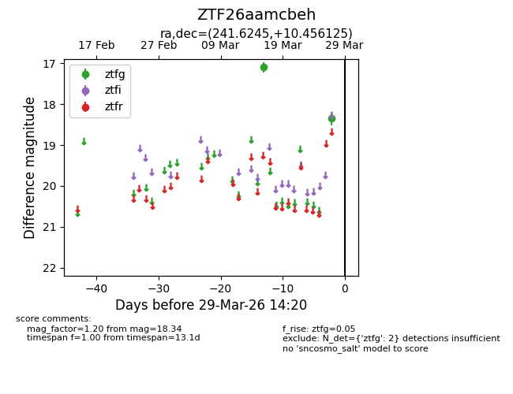
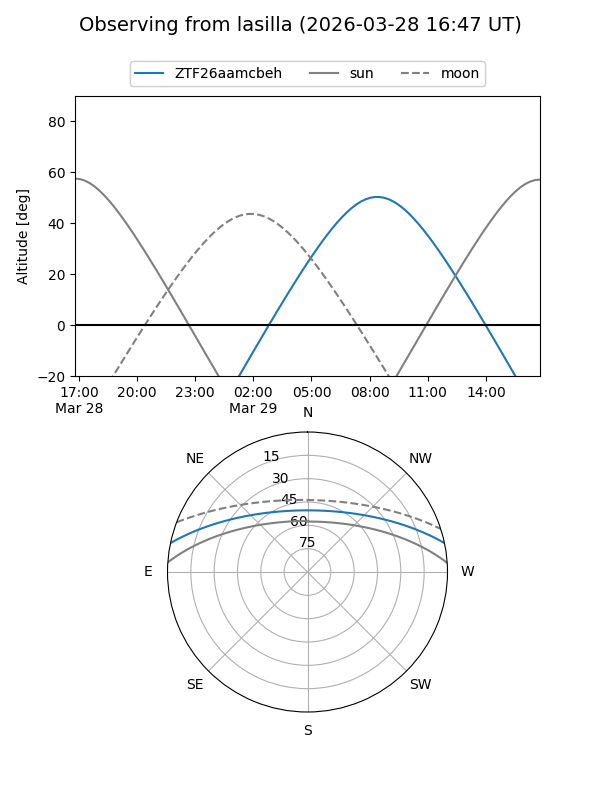
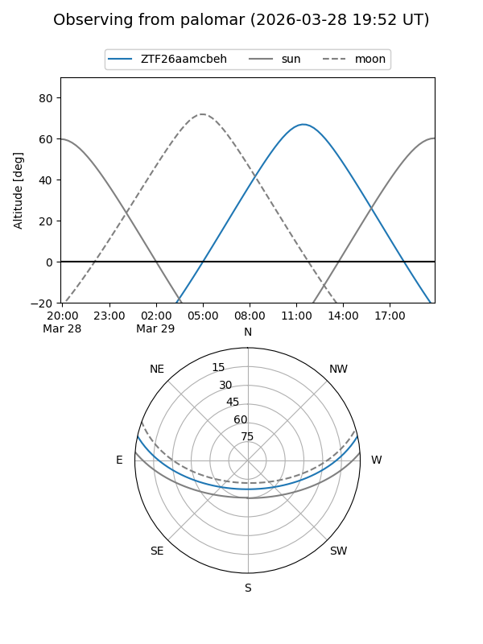

ZTF26aamcbeh
Target ZTF26aamcbeh at 2026-03-29 14:23
Aliases and brokers:
FINK: link
Lasair: link
ALeRCE: link
alt names
ZTF26aamcbeh (ztf,fink_ztf)
Coordinates:
equatorial (ra, dec) = 241.6245,+10.45612
equatorial (HMS+DMS) = 16:06:29.87,+10:27:22.05
galactic (l, b) = (22.6575,+41.27291)
Flags:
Photometry:
last ztfg=18.34
2 ztfg detections
Lightcurve

Visibility


Additional plots